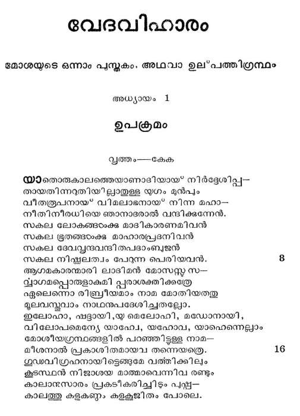
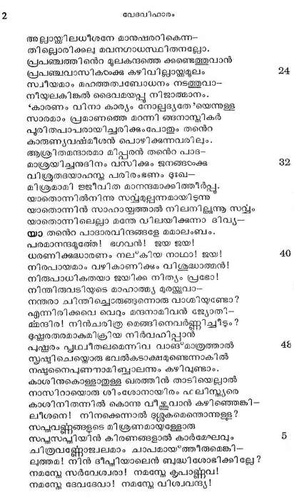
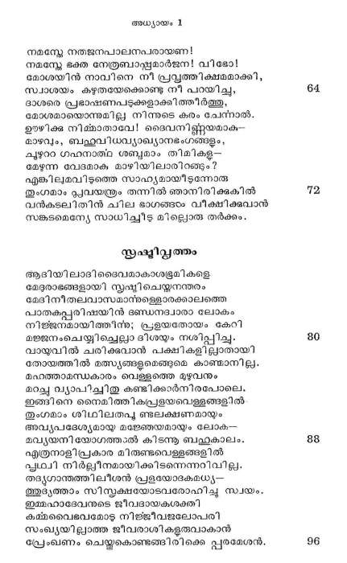
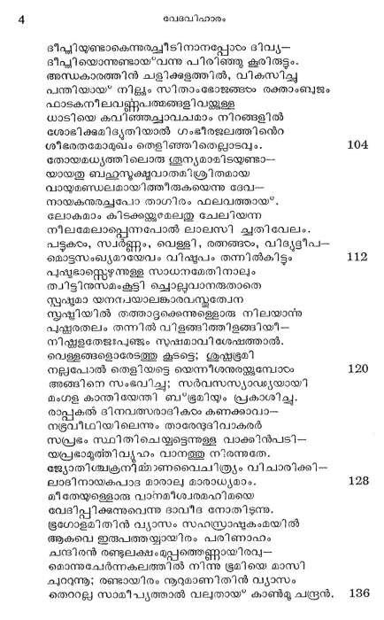
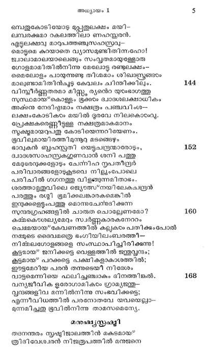
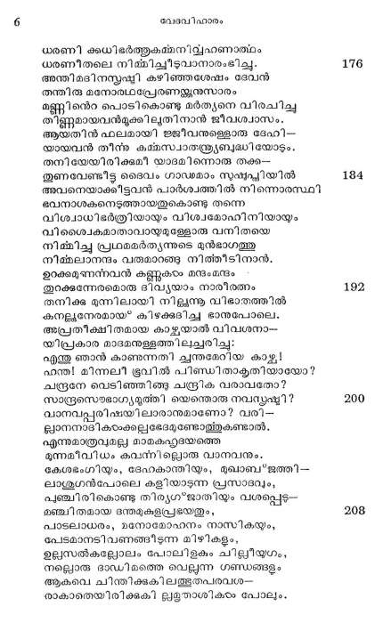
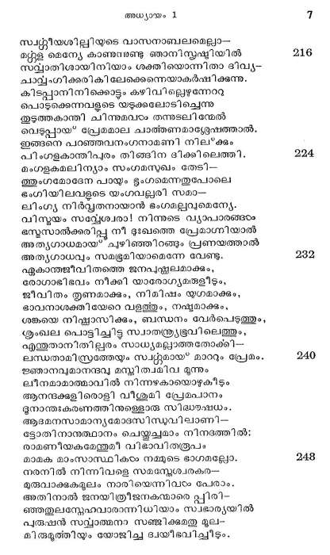

ഉപക്രമം
വൃത്തം---കേക
യാതൊരുകാലത്തെയാണാദിയായ് നിര്ദ്ദേശിപ്പ-
തായതിന്നറുതിയില്ലാതുള്ള യുഗം മുന്പും
വീതരൂപനായ് വിമലാഭനായ് നിന്ന മഹാ--
നീതിനീരധിയെ ഞാനാദരാല് വന്ദിക്കുന്നേന്.
സകല ലോകങ്ങഠംക്ക മാദികാരണമിവൻ
സകല ഭൂതങ്ങംക്കു മാഹാരപ്രദനിവന്.
സകല ദേവവ്ൃന്ദവന്ദിതപദാംബുജന്
സകല നിഷ്കലത്വം പേറുന്ന പെരിയവന്.
ആഗമകാരന്മാരി ലാദിമന് മോസസ്ത ൩--
പ്ലാഗമപ്പൊരുളാകുമി പ്പരാശക്തിക്കത്രേ
ഏലെന്നൊ രിബ്രീയമാം നാമ മോതിയതതു
മൂലവസ്തവാം നാഥനുപദേശിച്ചതല്ലോ.
ഇലോഹാ, ഷട്ദായി,യ മെലോഹി, മഡോനായി,
വിലോപമെന്യേ യാഹ്വേ, യഹോവ, യാഫെന്നെല്ലാം
മോശീയഗ്രന്ഥങ്ങളില് പറഞ്ഞിട്ടുള്ള നാമ--
മീശനാല് പ്രകാശിതമായവ തന്നെയത്രെ.
ഗുഡവിഗ്രഹനായിട്ടെങ്ങമേ വത്തിക്കിലും
കൂടസ്ഥന് നിജാശയ മാത്മാവെന്നിവ രണ്ടും
കാലാ൯ുസാരം പ്രകടീകരിച്ിടം പു്ണ-
കാലത്തു കളകണ്ഠം കളകൂജിതം പോലെ.

അല്ലാസ്ക്കിലധീശനേ മാനുഷരറികെന്ന-
തില്ലൊരിക്കല മവനഗാധസ്ഥിതനല്ലോ.
പ്രപഞ്ചത്തിന്െറ മുലകന്ദത്തെ കണ്ടെത്തുവാന്
പ്രപഞ്ചവാസികടാംക്കു കഴിവില്ലായ്ക്കമൂലം
സ്വീയമാം മഹത്തത്വബോധനം നടത്തുവാ-
നിയുലകിങ്കല് ടൈവമയപ്പു നിജാത്മാനം.
“കാരണം വിനാ കാര്യം നോലുദ്യതേ'യെന്നുള്ള
സാരമാം പ്രമാണത്തെ മറന്നി ങ്ങനാസ്പികര്
പുരിതപാപരായിച്ചരിക്കുംപോതും തന്റ
കാരുണ്യവഷ്മീശന് പൊഴിക്കുന്നവരിലും.
ആശ്രിതമന്ദാരമാ മിപ്പരന് തന്റ പാദ-
മാശ്രയിച്ചനുദിനം വസിക്കും ജനങ്ങഠക്ക
വിശ്രതദയാഹസ്ത പരിരംഭണം ദഃഖ--
മിശ്രമാമി ജജീവിത മാനന്ദമാക്കിത്തീര്പ്പു.
യാതൊന്നില്നിന്നു സവ്യമല്പന്നമായിടുന്നു
യാതൊന്നിന് സാഹായ്യത്താല് നിലനില്ുന്നൂ സവ്യം
യാതൊന്നിലെല്ലാ മന്തേ വിലയിക്കുന്നാ ദിവ്യ--
യാ തന്െറ പാദാരവിന്ദങ്ങളേ മധാലംബം.
പരമാനന്ദമുത്തേ! ഭഗവന്! ജയ ജയ!
ധരണിക്കദ്ധാരണം നല*കിയ നാഥാ! ജയ!
നിരപായമാം വഴികാണിക്കം വിശുദ്ധാത്മന്!
നിരുപാധികതയാ ജയിക്ക നിത്യം പ്രഭോ!
നിന്തിരുവടിയുടെ മാഹാത്മ്യ മുരയ്ക്കുവാ--
നന്തരാ ചിന്തില്രേങ്ങുന്നൊരു വാശ്ധിയുണ്ടോ?
എന്നിരിക്കവെ വെറും മന്ദനാമിവന് ജ്യോതി-.
മന്ദിര! നിന്ചരിത്ര മെങ്ങിനെവര്ണ്ണിച്ചീടം?
ഭുഷ്രതരമാകുമിക്രീയ നിര്വഹിപ്പാന്
പുത്പരം പൃഥ്വീതലമെന്നിവ വാങ്*മാത്രത്താല്
സൃഷ്ടിചെയ്കൊരു ഭവല്കടാക്ഷമുണ്ടെന്നാകില്
നഷ്ടനൈപുണനാമിബ്ാലന്നും കഴിവണ്ടാം.
കാശിനുകൊള്ളതുള്ള ഖരത്തിന് താടിയെല്ലാല്
നാസിറായൊരു ശിംശോനായിരം ഫലിസ്കയരെ
കാശിനിതന്നില് കൊന്നു വീക്കവാന് കഴിഞ്ഞെങ്കി-
ലീശനെ! നിനക്കെന്നാല് ദശ്ശുകമെന്തൊന്നുള്ള?
സപുവണ്ണങ്ങളുടെ മിശ്രണമായുള്ളോരു
സപ്പസപ്പിയിന് കിരണങ്ങളാല് കാര്മേഘവും
ചിത്രവണ്ണോജ്വലമാം ചാപമായ*ത്തീരുമെങ്കി--
ലത്തമ! നിന് ദീപ്പിയാലെന് ബുദ്ധിശോഭിക്കില്ലേ?
നമസ്കേ സര്വേശ്വരാ! നമസ്കേ കൃപാള്ലവ!
നമസ്കേ ദേവദേവാ! നമസ്കേ വിശ്വവന്ദ്യ!

നമസ്കേ നതജനപാലനപരായണ !
നമസ്ലേ ഭക്ത നേത്രബാ്മാര്ജന! വിഭോ!
മോശയിന് നാവിനെ നി പ്രവ്പത്തിക്ഷമമാക്കി,
സ്വാശയം കഴുതയേക്കൊണ്ടു നീ പറയിച്ച,
ദാശരെ പ്രഭാഷണപടുക്കളാക്കിത്തീര്ത്തു,
മോശമായൊന്നുമില്ല നിന്നുടെ കരം ചേന്റാല്.
ഈഴിക്ക നിമ്മാതാവേ! ദൈവനി്റ്റയമാകു-
മാഴവും, ബഹുവിധവ്യാഖ്യാനഭംഗങ്ങളും,
ചൂഴററ ഗഹനാത്റ ശബ്ദമാം തിമികള്-
മേഴുന്ന വേദമാക മാഴിയിലാരിറങ്ങം?
എങ്കിലുമവിടുത്തെ സാഹ്യമായിടുന്നോതു
ഗമാം പലവയന്ത്രം തന്നില് ഞാനിരിക്കുകില്
വന്കുടലിതിന് ചില ഭാഗങ്ങം വീക്ഷിക്ഷവാന്
സങ്കടമെന്യേ സാധിച്ചീട മില്ലൊരു തര്ക്കം.
യൂഷ്മിവ്വത്തം
ആഭിയിലാദിദൈവമാകാശഭൂമികളെ
മേദുരാഭങ്ങളായി സൃഷ്ടിചെയ്യനന്തരം
മേദിനീതലവാസമാന്ള്ളൊരക്കാലത്തെ
പാതകപ്പരിഷയിന് ഭണ്ഡനദ്വാരാ ലോകം
നിജ്ജനമായിത്തിന്ന; പ്രളയതോയം കേറി
മജ്ജനംചെയ്യിചെല്ലാ ദിശയും നശിപ്പിച്ചും
വായുവില് ചരിക്കുവാന് പക്ഷികളില്ലാതായി
തോയത്തില് മ്സ്യങ്ങളുമെങ്ങുമെ കാണ്മാനില്ല.
മഹത്താമന്ധകാരം വെള്ളത്തെ മുഴുവനും
മാച്ചു ്യാപിച്ചിതു കണ്ടിക്കാര്നിരപോലെ.
ഇങ്ങിനെ നൈമിത്തികപ്രളയവെള്ളങ്ങളില്
തുംഗമാം ശിഥിലതപൂ ലക്ഷണമായും
അവ്യപദേശ്യമായ മഞേഞയമായും ലോക-
മവ്യയനി യോഗത്തംല് കിടന്നൂ ബഹുകാലം.
എത്രനാളിപ്രകാര മിരുണ്ടവെള്ളങ്ങളില്
പൃഥ്വി നിര്ല്ലീനമായിക്കിടന്നെന്നറിവിലം
തദ്യഗാന്തത്തിലീശന് പ്രളയോദകരധ്യ--
ഞദൃത്താം സിസ്തക്ഷയോടവരോഹിചൂു സ്വയം.
ഇമ്മഹാദേവനുടെ ജീവദായകശക്തി
കമ്മവൈഭവമോട നിജ്ജീവജലോപരി
സംഖ്യയില്ലാത്ത ജീവരാശികളുരുവാകാന്
പ്രേംഖണം ചെയ്തുകൊണ്ടങ്ങിരിക്കെ പ്പരമേശന്.

ഭപ്ലിയുണ്ടാകെന്നുരച്ചീടിനാനപ്പോം ദിവ്യ--
ഭീപ്പിയൊന്നുണ്ടായ*വന്നു പിരിഞ്ഞു കൂരിരുടടം.
അന്ധകാരത്തിന് ചളിക്കളത്തില്, വികസിച്ചു
പന്തിയായ* നിള്യം സിതാംഭോജങ്ങടം രക്താംബും
ഫാടകനീലവള്ുപത്മങ്ങളിവയ്കകുള്ള
ധാടിയെ കവിഞ്ഞച്ചാവചമാം നിറങ്ങളില്
ശോടിക്കുമിദ്ൃതിയാല് ഗംഭീരജലത്തിന്െറ
ശീഭരതമോമുഖം തെളിഞ്ഞിതെല്പാടവും.
തോയമധ്യത്തിലൊതു ുന്യമാമിടയുണ്ടാ--
യായതു ബഹുസൂക്ഷുവാതമിശ്രിതമായ
വായുമണ്ഡലമായിത്തീരുകയെന്നു ദേവ---
നായകനുരച്ചപോ താഗിരം ഫലവത്തായ.
ലോകമാം കിടക്കയകുമേലതു ചേലിയന്ന
നീലമേലാപ്പെന്നപോല് ലാലസി ചുതിവേലം.
പട്ടുകടം, സ്വര്ണ്ണം, വെള്ളി, രങ്ങടം, വിദയ്ീപ-
ഒമൊട്ടസംഖ്യമായേവം വിഷ്ുപം തന്നില്കിട്ടും
പുഷ്ടഭാസ്റ്റെഴന്നുള്ള സാധനമേതിനാലും
ത്വിട്ടിനസമംകൂട്ടി ചൊല്ലവാനരുതാതെ
സ്റരഷടമാ യനമ്പയാലങ്കാരവസ്കത്വേന
സൃഷ്ടിയില് തത്താട്ടക്കെന്നുള്ളൊരു നിലയാന്ര
പഷ്ടരതലം തന്നില് വിളങ്ങിത്തിളങ്ങിയി--
നിഷ്കളതേജഃപഞ്ജം സുഷമാവി ശേഷത്താല്.
വെള്ളങ്ങളൊരേടത്തു കൂടട്ടെ; ശുഷ്ണഭ്രമി
നല്പപോല് തെളിയട്ടെ യെന്നീശനുരയക്കുമ്പോടം
അങ്ങിനെ സംഭവിച്ച; സര്വസസ്യാഡ്യയായി
മംഗള കാന്തിയേന്തി ബഭൂമിയും പ്രകാശിച്ചു.
കൽ ദിനവത്സരാദികടം കണക്കാവാം-
നടൂവീഥിയിലെന്നും താരേന്ദുദിവാകരര്
സപ്പടം സ്ഥിതിചെയ്യട്ടെന്നുള്ള വാക്കിന്പടി--
യപ്രഭാമുത്തിവ്യൂഹം വാനത്തു നിരന്നുതേ.
ജ്യോതിശ്ചകരനിമ്മാണവൈചിത്രയം വിചാരിക്കി--
ലാദിനായകപാട മാരാല മാരാധ്യമാം.
മീതേയുള്ളൊരു വാനമീശ്വരമഹിമയെ
വേദിപ്പിക്കുന്നുവെന്നു ദാവീദ നോതിടുന്നു.
ട്രഗോളമിതിന് വ്യാസം സഹസ്രാഷ്ടകംമയില്
ആകലെ ഇരുപത്തയ്യായിരം പരിണാഹം
ചന്ദിരന് രണ്ടുലക്ഷംമുപ്പത്തെണ്ണായിരവ--
മൊന്നുചേര്ന്നകലത്തില് നിന്നു ട്രമിയെ മാസി
ചൂറന്നൂ; രണ്ടായിരം നൂറുമാണിതിന് വ്യാസം
തെറാല്ല സാമീപ്യത്താല് വലുതായ" കാൺമു ചന്ദ്രന്.

ഭമ്പതുകോടിയോടു മപ്പതുലക്ഷം മയി.
ലമ്പരക്കുമാ റകലത്തിലാ ണഹസ്കതരന്.
എട്ടുലക്ഷവു മാറുപത്തഞ്ചുസഹസ്്വു--
മൊട്ടുമെ കുറയാതെ വ്യാസമുണ്ടിതിന്നഹോ!
്വാലാമാലയാലെങ്ങും സംവൃതമായുള്ളോരു
ഗോളമാമിതില്നിന്നു മേലോട്ടു രണ്ടുലക്ഷം-.
മൈലോളം പായുന്നുണ്ടു തിശമാം ശിഖദസ്ത്രങ്ങ
മാലുണ്ടാമിതിന്ചൂടു കേവലം ചിന്തിക്കിലും.
പിസ്കീര്ണ്ണതരമാ മിസ്റ്റ, ത്യന്റ യുടേഭാഗത്തു
സുസ്ഥമായ*കൊള്ളം ഭൂര് ദവാദശലക്ഷാധികം
അക്കു നേദിഷ്ടഃമാം നക്ഷത്രം പഞ്ചവിംശ--
ലക്ഷംകോടികടം മയില് ദുരവേ നിലകൊടംവു.
പ്രേക്ഷകരെണ്ണിടടള്ള നക്ഷത്രമാകമാനം
സൂക്ഷുമായറുപതു കോടിയെന്നറിയേണം.
ഭൂവിലുമായിരത്തിമുന്നുറ മടങ്ങെഴും
ഭാവുകന് ബൃഹസ്പതി യെട്ടചന്ദ്രന്മാരോടും,
പ്ാദശസാഹസ്രകഗുണവാന് ശനി പത്തു
മേടതേന്ദുക്കളോടും ചേന്നിഹ നൃപതീന്ദ്ര
പരിവാരങ്ങളോടുകൂടവെ നിലുംപോലെ
പരിചിൽ ഗഗനത്തു വിളങ്ങന്നമിതാഭം.
ശരത്താമൃതുവിലെ ജ്യെ്സഴനയിലേകചന്ദ്രന്
പരത്തും രശ്മി ഭൂമിക്കലങ്കാരകമെങ്കില്
ഇന്ദുക്കളെട്ടംപത്തു മൊന്നുചേന്രദിക്കുന്ന
സന്ദരഗ്രഹങ്ങളില് ചാരുത ചൊല്ലേണമോ?
കമ്മകൌശല്യമേറും സ്വര്ണ്ണകാരകനേറം
ചെമ്മയായ*കേവണത്തില് കല്ലുകം പതിക്ടംപോല്
നമ്മുടെ ദൈവമത്രെ ഭംഗിയിലംബരത്തി--
നിമ്മലഗോളങ്ങളെ സംസ്ഥാപിച്ചിരിക്കുന്നു!
കൂട്ടമായ ജനിക്കട്ടെ വെള്ളത്തില് ജന്തുവൃന്ദം;
കൂട്ടമായ പറക്കട്ടെ പക്ഷികളാകാശത്തില്;
ഈട്ടമേറിയ പരന് തന്നുടെയീ നിദേശം
വാട്ടമെന്നിയെ ഫലിച്ചഞ്ചാകം ദിനത്തിങ്കല്.
വന്യജീവിക ഉരോഗാമികടം ഗ്രാമ്യജന്തു-
പ്ൃന്ദങ്ങളിവ മന്നില്നിന്നു സംഭവിക്കട്ടെ;
എന്നീവിധത്തില് പരനോതവേ യവയെല്ലാ--
മന്നമിച്ചത ഭൂവില്നിന്നു താമസമെന്യേ.
മനുഷ്യസ്തഷ്മി
തദനന്തരം സൃഷ്ടിജാലത്തിന് മകടമായ*
ര്രിദിവേശ്വരന് നിജരൂപത്തില് മനുജനെ

ധരണി കുധിഭര്ത്തുകമ്മനിദ്യഹണാത്ഥം
ധരണീതലെ നിത്മിച്ചീടുവാനാരംഭിച്ചു.
അന്തിമദിനസ്ൃഷ്ടി കഴിഞ്ഞശേഷം ദേവന്
തന്തിരു മനോരഥപ്രേരണയ്ക്കനുസാരം
മണ്ണിന്െറ പൊടികൊണ്ടു മര്ത്യനെ വിരചിച്ച
തിണ്ണുമായവന്ടുക്കിലൂതിനാന് ജീവശ്വാസം.
ആയതിന് ഫലമായി ജജീവനുള്ളൊരു ദേഹി--
യായവന് തീന്ന കമ്മസ്വാതന്ത്യബുദ്ധിയോടും.
തനിയേയിരിക്കുമീ യാദമിന്നൊരു തക്ക--
ഇുണവേണ്ടീട്ട ദൈവം ഗാഡമാം സുഷ്ടപ്ലിയില്
അവനെയാക്കിട്ടവന് പാര്ശ്വത്തില് നിന്നൊരസ്ഥി
ഭവനാശകനെടുത്തായതുകൊണ്ടു തന്നെ
പിശ്വാധിഭര്ത്രിയായും വിശവമോഹിനിയായും
വിശ്വൈകമാതാവായുമുള്ളോരു വനിതയെ
നിക്ഷിച്ച പ്രഥമമര്ത്യന്നുടെ മുന്ഭാഗത്തു
നിമ്മലാനന്ദം വരുമാറങ്ങ നിത്തീടിനാന്.
ഉറക്കമുണന്റവന് കണ്ണൂകടം തന്ദംമന്ദം
തുറക്കന്നേരമൊരു ദിവ്യയാം നാരീരതം
തനിക്കു മുന്നിലായി നില്ുന്നൂ വിഭാതത്തില്
കനള്വനേരമായ* കിഴക്കുദിചച ഭാനുപോലെ.
അപ്രതീക്ഷിതമായ കാഴ്ചയാല് വിവശനാ-
യിപ്രകാര മാദമനുള്ളത്തിലുചരിച്ച:
എന്തു ഞാന് കാണുന്നതി ചന്തമേറിയ കാഴ്ച!
ഹന്ത! മിന്നലി ഭൂവില് പിണ്ഡിതാകൃതിയായോ?
ചന്്രനേ വെടിഞ്ഞിങ്ങു ചന്ദ്രിക വരാവതോ?
സാന്ദ്രസൌഭാഗ്യമുത്തി യെന്തൊരു നവസ്കഷ്ടി?
വാനവപ്പരിഷയിലാരാനുമാണോ? വരി-
ല്ാനനാടികടംക്കല്ലഭേദമുണ്ടോള്തുകണ്ടാല്.
എന്നുമാത്രവുമല്ല മാമകഹൃദയത്തെ
മന്നമീവിധം കവന്നില്പൊരു വാനവനും.
കേശഭംഗിയും, ദേഹകാന്തിയും, മുഖാബ"ജത്തി---
ലാശുഗന്പോലെ കളിയാടുന്ന പ്രസാദവും,
പുഞ്ചിരികൊണ്ടു തിര്യഗ*ജാതിയും വശപ്പെടു--
മഞ്ചിതമായ ഒന്തമുകളപ്രഭയതും,,
പാടലാധരം, മനോമോഹനം നാസികയും,
പേടമാനടിവണങ്ങിടുന്ന മിഴികളും.
ഉല്സല്കല്പോലം പോലിളകം ചില്ീയുഗം,
നല്ലൊരു ഭാഡിമത്തെ വെല്ലുന്ന ഗണ്ഡങ്ങളം
ആകലവെ ചിന്തിക്കുകിലത്ഭുതപരവശ.--
രാകാതെയിരിക്കുകി ലളൃതാശികടം പോലും.

സ്വത്നീയശില്ലിയുടെ വാസനാബലമെല്ലാ-
മൂള മെന്യേ കാണുമ്നണ്ടു ഞാനിസ്ൃഷ്ടിയില്
സല്വാതിശായിനിയാം ശക്തിയൊന്നിതാ ദിവ്യ-
ചാല്ംഗിക്കരികിലേക്കെന്നെയാകര്ഷിക്കുന്നു.
കിടപ്പാനിനിക്കൊട്ടും കഴിവില്ലെഴുന്നോവു
പൊടുക്കെന്നവളുടെ യടുക്കലോടിച്ചെന്നു
തുടത്തകാന്തി ചിന്നുമവഠം തന്നുടലിന്മേല്
വെടുപ്പായ* പ്രേമമാല ചാത്തണമാശ്ലേഷത്താല്.
ഇങ്ങനെ പറഞ്ഞവനംഗനാമണി നിലക്കും
പിംഗളകാന്തിപുരം തിങ്ങിന ദിക്കിലെത്തി.
മംഗളകമലിന്യാം സംഗമസുഖം തേടി--
ത്ുംഗമോദേന പായും ഭുംഗമെന്നതുപോലെ
ഭംഗിയിലവളടെ യംഗവല്പരി സമാ--
ലിംഗ്യ നിര്്വതനായാന് ഭംഗമല്വുമെന്യേ.
വിസ്മയം സവ്വേശ്വരാ! നിന്നുടെ വ്യാപാരങ്ങടം
ഭസ്മസാല്ക്കരിപ്പു നീ ദുഃഖത്തെ പ്രേമാഗ്നിയാല്
അത്യഗാധമായ ചുഴിഞ്ഞിറങ്ങും പ്രണയത്താല്
അതൃഗാധവും സമഭൂമിയാമെന്നേ വേണ്ടു.
ഏകാന്തജീവിതത്തെ ജനപുസ്തലമാക്കും,
രോഗാഭിഭവം നീക്കി യാരോഗ്യമയുളീടും,
ജീവിതം തൃണമാക്കും, നിമിഷം യുഗമാക്കും,
ഭാവനാശക്തിയേറെ വളത്തും, നഷ്ടമാക്കും,
ശങ്കയെ നിഷ്പാസിക്കും, ബന്ധനം വേര്പെടുത്തും,
കൂംഖല പൊട്ടിച്ചിട്ട സ്വാതന്ര്യഭൂവിലെത്തും,
എന്തുതാനിതില്ലരം സാധ്യമല്ലാത്തതോക്കി--
ലസ്ധതാമിസ്രത്തേയും സ്വന്തമായ" മാറും പ്രേമം.
ജ്ഞാനവുമാനന്ദവു മസ്തിതവമിവ മൂന്നും
ലീനമാമാത്മാവില് നിന്നഴകായൊഴുകിടും
ആനന്ദക്കുളിരൊളി വീശുമി പ്രേമപാനം
ഭുനാന്തഃകരണത്തിനുള്ളൊരു സിദ്ധഭഷേധം.
ആദമനസാമാന്യമോദസിസുവിലാണി--
ട്ടോതിനാനുത്ഥാനം ചെയ്തുച്ചമാം നിനദത്തില്:
രാമണീയകമേന്തുമീ വിഭാവിതരൂപം
മാമക മാംസാസ്ഥികടം നമ്മുടെ ഭാഗമല്ലോ.
നരനില് നിന്നിവളെ സമസ്നേശ്വരകര--
മുരുവാക്കുകമുലം നാരിയെന്നിവഠം പേരാം.
അതിനാല് ജനയിത്രീജനകന്മാരെ പ്പിരി--
ഞ്ഞതുലസ്നേഹവാരാന്നിധിയാം സാഭാര്യയില്
പുരുഷന് സവ്വാത്മനാ സഞ്ജിക്കുമതു മൂല-
മിരുമൂത്തിയും യോജിച്ച ദ്വയീഭവിച്ചീടം.

മാനുഷാഗ്രിമനിതു ഘോഷിച്ചു വിരമിക്കെ
പ്പീനസഹദം ദേവനേകിനാ നാശിസ്റ്റേവം:
്ത്രീപുമാന്മാരാം നിങ്ങ സന്താനപുഷ്ടി യോടു
ടൂമിയില് പെരുകിയി ട്ടംബുധിചരത്തെയും
ഭൂചരഖേചരങ്ങളാകിയ സല്യത്തെയും
നീചതകൂടാ തെന്നുടടക്കിബ*കരിക്കുവിന്.
നിങ്ങടക്കു തിന്മതിന്നു സസ്യസല്ഫലങ്ങളെ
ഭംഗമെന്നിയെ തരുന്നിതരപ്രാണികടംക്കും
ഈദ്ദശം ചൊന്നു നാഥന് പുനഷ്ണാപനമാകും
മേദനീസ്ൃഷ്ടി തീത്തു വിശ്രമിച്ചേഴാം നാളില്.
ആറുവാസരം കൊണ്ടിബ*ഭീമമാമുദ്ധാരണം
കൂറകൂടിയ ദേവന് തീത്തതു ബാബിലോന്യര്,
പാര്സിക, ഒെടസ്കന്മാര്, ഹൈന്ദവ, രീജിപ*തുകാ--
രാദിയായോരിന് പരാവൃത്തത്തില് കിടക്കുന്നു.